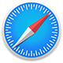

Repères marquants des technologies et standards qui ont façonné le Web moderne.
Ligne du temps
Première page Web
Créée par Tim Berners-Lee au CERN (Suisse), la toute première page web était
hébergée sur un ordinateur NeXT. Elle
décrivait le projet du "World Wide Web", expliquant son fonctionnement et les concepts clés
comme l'hypertexte. Son
adresse était http://info.cern.ch/hypertext/WWW/TheProject.html (une copie archivée existe
encore). Cette page
rudimentaire, sans images ni design, servait de guide technique pour naviguer entre les
documents via des liens
cliquables, posant les fondations du web moderne.
Cette innovation a déclenché une révolution numérique globale, transformant
Internet d'un outil académique en un
réseau universel reliant l'information, les personnes et les idées, catalyseur de la société
connectée d'aujourd'hui..
Erwise: premier navigateur graphique
Erwise, développé en 1992 par quatre étudiants finlandais de l’Université de
technologie d’Helsinki (dont Kim Nyberg et
Kati Borgers), fut le premier navigateur web graphique au monde, précédant même Mosaic
(1993). Conçu pour fonctionner
sur Unix/X Window System, il introduisait des innovations majeures comme le clic sur les
liens hypertextes, l’affichage
simultané de texte et d’images (bien que ces dernières ne s’affichent pas en ligne), et une
interface utilisateur
intuitive avec des onglets pour naviguer entre les pages. Malgré son avance technologique,
Erwise ne fut jamais
commercialisé : les étudiants, focalisés sur leurs études, abandonnèrent le projet après
leur diplôme, et le code source
se perdit partiellement. Une version reconstruite à partir d’archives est aujourd’hui
exposée au Musée des Technologies
de la Communication en Finlande.
Bien que méconnu, Erwise a posé les bases des navigateurs modernes en
prouvant la viabilité d’une interface graphique
pour le Web, inspirant indirectement les créateurs de Mosaic et, par extension, l’essor
d’Internet grand public.
Mosaic : navigateur graphique et stable
Mosaic, lancé en 1993 par une équipe du NCSA (National Center for
Supercomputing Applications) dirigée par Marc
Andreessen et Eric Bina, fut le premier navigateur web graphique grand public, stable et
accessible, révolutionnant
l’usage d’Internet. Contrairement à Erwise, Mosaic fonctionnait sur Windows, Mac et Unix,
affichait images et texte en
temps réel sur une même page (grâce au protocole HTTP et aux balises HTML naissantes), et
popularisa des fonctionnalités
comme les liens cliquables, les bookmarks et une interface simple avec une barre d’URL. Sa
version 1.0 (novembre 1993)
devint un phénomène mondial, passant de 50 000 à 2 millions d’utilisateurs en un an.
Cependant, le NCSA abandonna son
développement en 1997 après la sortie de Netscape Navigator (créé par Andreessen en 1994),
qui en reprenait le code et
dominera le marché.
Mosaic a démocratisé le Web en le rendant visuel et convivial, transformant
Internet d’un outil académique en un média
de masse, et ouvrant la voie à l’ère commerciale du numérique (e-commerce, médias en ligne).
Sans lui, la croissance
exponentielle du Web dans les années 1990 aurait été impensable
Netscape
Netscape Navigator, lancé en 1994 par Marc Andreessen et Jim Clark via la
société Netscape Communications, fut le
premier navigateur web commercial et dominant, directement inspiré de Mosaic (dont il
reprenait une partie du code).
Avec des innovations comme les cookies, le JavaScript (1995, créé pour dynamiser les pages)
et le SSL (sécurité des
transactions), il devint rapidement la référence, captant plus de 80 % du marché en 1996.
Cependant, son déclin s’amorça
avec la guerre des navigateurs (1995-2000), lorsque Microsoft intégra Internet Explorer (IE)
gratuitement à Windows,
utilisant sa position dominante pour étouffer Netscape (procès antitrust en 1998). Malgré
des tentatives de relance
(comme la publication du code source en 1998, donnant naissance à Mozilla Firefox), Netscape
perdit sa pertinence et fut
abandonné en 2008 après le rachat d’AOL par Yahoo!.
Netscape a définis les standards du Web moderne (JavaScript, HTTPS) et
prouvé son potentiel économique, mais son
écrasement par IE a aussi illustré les dangers des monopoles technologiques, poussant plus
tard à l’émergence de
navigateurs open source comme Firefox.
Internet Explorer
Internet Explorer (IE), lancé par Microsoft en 1995 comme réponse à Netscape
Navigator, devint l’arme clé de la guerre
des navigateurs grâce à son intégration gratuite et exclusive dans Windows (à partir de
Windows 95, puis
systématiquement avec Windows 98/2000/XP). En exploitant sa domination sur les OS, Microsoft
écrasa Netscape (passant de
10 % à 95 % de parts de marché entre 1996 et 2002), malgré des procès antitrust (notamment
aux États-Unis et en Europe)
pour pratiques abusives. IE innovait peu mais imposa des standards comme CSS ou XML, tout en
étant critiqué pour sa
lenteur, ses failles de sécurité et son manque de conformité aux normes web. Après un déclin
progressif face à Firefox
(2004) et Chrome (2008), Microsoft abandonna IE en 2015 (dernière version : IE11) au profit
d’Edge (basé sur Chromium
depuis 2020), avant de le retirer définitivement en juin 2022.
IE a monopolisé le Web pendant une décennie, freinant l’innovation mais
accélérant son adoption massive ; son déclin a
ouvert la voie à une ère multipolaire (Chrome, Firefox, Safari) et souligné l’importance des
standards ouverts et de la
concurrence. Son héritage reste celui d’un outil à la fois incontournable et détesté,
symbole des excès des monopoles
technologiques.
Mozilla Firefox
Mozilla Firefox, né en 2002 sous le nom de Phoenix (renommé Firebird en 2003
pour éviter des conflits de marque, puis
Firefox en 2004), est le fruit du projet open source Mozilla, lui-même issu de la libération
du code de Netscape en
1998. Développé par la Mozilla Foundation (créée par des anciens de Netscape, dont Blake
Ross et Dave Hyatt), Firefox se
positionna comme une alternative rapide, sécurisée et respectueuse des standards face à
l’hégémonie d’Internet Explorer.
Firefox 1.0, sorti en novembre 2004, connut un succès fulgurant, atteignant 100 millions de
téléchargements en moins
d’un an et brisant la domination d’IE (qui passa de 95 % à moins de 70 % de parts de marché
d’ici 2008). Le navigateur
devint un symbole de la résistance aux monopoles et de l’innovation collaborative, prouvant
qu’un logiciel open source
pouvait rivaliser avec les géants.
Firefox a redéfini les attentes des utilisateurs en matière de performance
et de personnalisation, accélérant le déclin
d’Internet Explorer et poussant Microsoft à améliorer ses produits. Il a aussi lancé l’ère
des navigateurs modernes,
inspirant Chrome (2008) et Safari, tout en restant un pilier de la défense de la vie privée
(avec des fonctionnalités
comme le mode privé ou la protection contre le pistage). Malgré une baisse d’influence face
à Chrome, Firefox reste un
acteur clé, porté par une communauté engagée pour un Web ouvert et décentralisé.

Safari
Safari, lancé en janvier 2003 par Apple (en version bêta publique, puis
intégré à Mac OS X 10.3 "Panther" en octobre
2003), marqua l’entrée d’Apple dans la guerre des navigateurs avec une approche typiquement
cupertinienne : design
épuré, performances optimisées et intégration profonde avec l’écosystème macOS.
Avec ~20 % de parts de marché (principalement sur iOS/macOS), Safari reste
un acteur clé, critiqué pour son manque
d’extensions (vs. Chrome/Firefox) mais plébiscité pour son efficacité énergétique et son
intégration avec l’écosystème
Apple. Son rôle dans la transition vers un web mobile et son influence sur les standards en
font l’un des navigateurs
les plus influents de l’histoire.
Google Chrome
Google Chrome, lancé en 2008, est un navigateur web développé par Google qui
a révolutionné l’expérience en ligne grâce
à sa vitesse exceptionnelle (grâce au moteur JavaScript V8), son design minimaliste (avec
une barre d’URL intelligente
et des onglets simplifiés) et son architecture multiprocessus garantissant stabilité et
sécurité. Conçu comme une
réponse aux limites des navigateurs existants, Chrome a rapidement séduit les utilisateurs
avec des fonctionnalités
innovantes comme la navigation privée (Incognito), la synchronisation multi-appareils via un
compte Google et un
écosystème d’extensions riche. Devenu open source via le projet Chromium, il a aussi servi
de base à d’autres
navigateurs (Edge, Opera, Brave), tout en s’imposant comme la pierre angulaire des
applications web modernes (Gmail,
Google Docs, Netflix) et du cloud computing.
Chrome ha transformé le web en une plateforme universelle, accélérant la
fin des logiciels locaux au profit
d’applications en ligne, mais son quasi-monopole (≈65 % de parts de marché) soulève des
questions sur la diversité
technologique et la concentration du pouvoir entre les mains de Google.
HTTP/2 publié (RFC 7540)
HTTP/2, publié en 2015, est une version améliorée du protocole HTTP qui rend
le web plus rapide et plus efficace.
Contrairement à l’ancienne version (HTTP/1.1), où les requêtes devaient s’exécuter les unes
après les autres (ce qui
ralentissait le chargement des pages), HTTP/2 permet d’envoyer plusieurs données en même
temps sur une seule connexion
(multiplexage). De plus, il compresse les en-têtes (les informations techniques échangées
entre le navigateur et le
serveur), ce qui réduit le temps de chargement et économise de la bande passante. Résultat :
les sites s’affichent plus
vite, surtout ceux qui contiennent beaucoup d'images, de vidéos ou d'éléments interactifs,
sans avoir besoin de modifier
leur code. Une avancée majeure pour une navigation plus fluide !
WebAssembly MVP
WebAssembly (Wasm), lancé en 2017 comme une technologie standardisée par le
W3C, est une sorte de "super-code" conçu
pour faire tourner des applications ultra-rapides directement dans ton navigateur, presque
aussi vite que si elles
étaient installées sur ton ordinateur. Avant Wasm, les sites web complexes (comme les jeux
3D, les logiciels de montage
vidéo ou les simulations scientifiques) devaient se contenter de JavaScript, un langage
puissant mais parfois trop lent
pour des calculs très lourds. Wasm change la donne : il permet aux développeurs d’écrire
leur code dans des langages
comme C++, Rust ou C#, de le compiler en un format binaire léger (.wasm), puis de l’exécuter
dans le navigateur à une
vitesse proche du natif. Concretement, ça signifie que tu peux maintenant jouer à des jeux
en 3D fluides (comme Doom 3
ou Angry Faust), utiliser des outils de retouche photo avancés (comme Photoshop en version
web) ou même faire tourner
des applications professionnelles (comme AutoCAD) sans rien installer – tout fonctionne dans
Chrome, Firefox ou Safari.
Wasm est aussi sécurisé (il tourne dans une "boîte fermée" du navigateur) et compatible avec
JavaScript, ce qui permet
aux développeurs de mixer les deux pour le meilleur des deux mondes. Bref, c’est la
technologie qui transforme ton
navigateur en une vraie plateforme de logiciels, sans sacrifier les performances !
HTTP/3 (RFC 9114) basé sur QUIC
HTTP/3 (basé sur QUIC) est la nouvelle version du protocole web qui accélère
et sécurise les connexions. Contrairement à
HTTP/2, il utilise QUIC (au lieu de TCP), ce qui réduit les latences, améliore la stabilité
(même sur des réseaux
instables comme la 4G) et chiffre automatiquement les échanges (plus besoin de TLS séparé).
Résultat : les pages se
chargent plus vite, les vidéos et jeux en ligne sont plus fluides, et les reconnexions (en
cas de changement de réseau)
sont instantanées. Une révolution pour un web plus rapide et plus fiable, surtout sur
mobile.